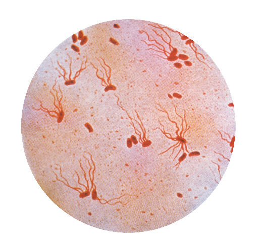
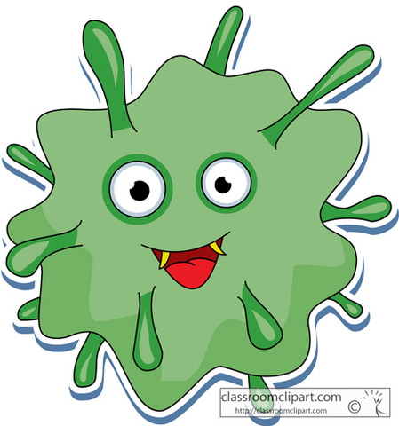
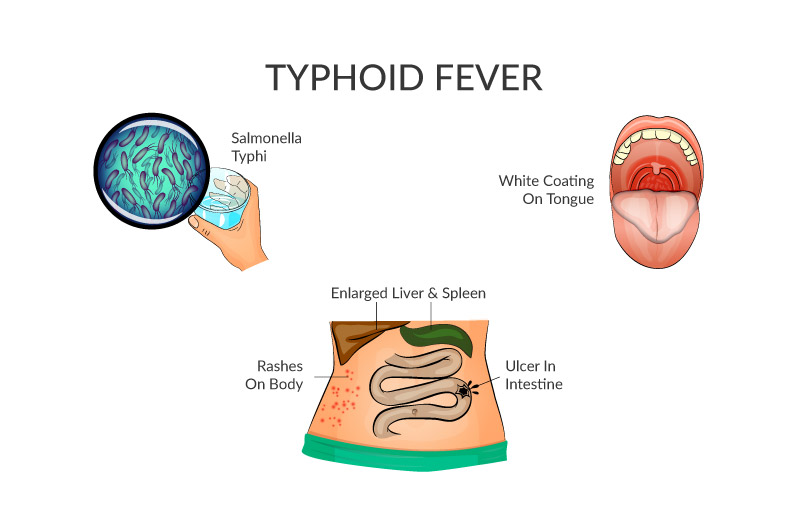
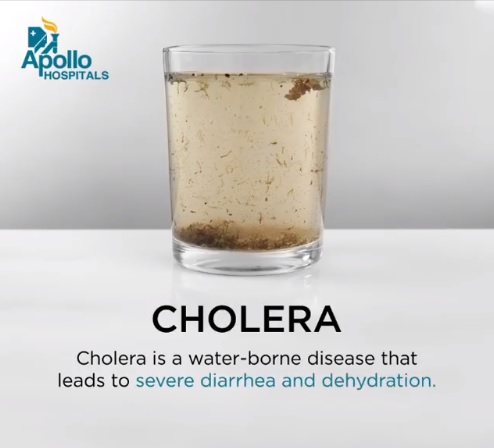

Bacteria
Infectious bacteria and the diseases caused by them.
Bacteria
Bacteria are small single-celled organisms. Bacteria are found almost everywhere on Earth and are vital to the planet's ecosystems. Some species can live under extreme conditions of temperature and pressure. The human body is full of bacteria, and in fact is estimated to contain more bacterial cells than human cells.
The size of Bacteria is 1 μm to 10 μm. They are unicellular, independent/Parasitic organisms. Sometimes many bacteria together form colonies. Bacterial cell is prokaryotic with cell wall, but distinct nucleus or cell organelles are absent. They reproduce by simple binary fission. In favorable conditions, bacteria grow vigorously and can double their number in 20 minutes.
Some Bacterias


Dieseases
We are going to be disscusing on 3 types of infectious bacteria and the diseases caused by them. The 3 diseases are Typhoid, Cholera and Tuberculosis. So let's get started scrolling.
Typhoid
 Typhoid fever is also called enteric fever. It is a prospectively, multi systemic illness that has been a public health problem, especially in the developing world. Typhoid fever is caused by a type of bacteria called Salmonella typhi. This isn't the same bacteria that cause salmonella food poisoning, but the two are related.
Typhoid fever is a serious bacterial infection that easily spreads through contaminated water and food. Along with high fever, it can cause abdominal pains headache, and loss of appetite. With treatment, most people make a full recovery. But untreated typhoid can lead to life-threatening complications. Natural And Home Treatments For Typhoid Fever In uncomplicated cases of typhoid fever (salmonella infections), the patient is usually given a sponge bath at room temperature using the infusion or the decoration of any of these fever-reducing herbs: Fever plant (Optimum gratissimum); lemon grass Cymbopogon citrates
Cholera


A bacterial disease causing severe diarrhoea and dehydration, usually spread in water. Cholera is an acute diarrheal illness caused by infection of the intestine with Vibrio cholerae bacteria. People can get sick when they swallow food or water contaminated with cholera bacteria. Symptoms: Diarrhea
Is cholera still around? Sadly, yes. Each year, 1.3 million to 4 million people around the world suffer from cholera and 21,000 to 143,000 people die of the disease, according to the World Health Organization (WHO).Cholera is an extremely virulent disease that can cause severe acute watery diarrhoea. It takes between 12 hours and 5 days for a person to show symptoms after ingesting contaminated food or water. Cholera affects both children and adults and can kill within hours if untreated. Well, boiling water is a very effective way to disinfect the water. And it will not only kill Vibrio cholerae, the bacteria that causes cholera, but it's a right way to make sure your water is free of any pathogen, any living organism that could cause infection or illness.
Tuberculosis


A potentially serious infectious bacterial disease that mainly affects the lungs. Known as TB. The bacteria that cause TB are spread when an infected person coughs or sneezes. Most people infected with the bacteria that cause tuberculosis don't have symptoms. When symptoms do occur, they usually include a cough, weight loss, night sweats and fever. Tuberculosis (TB) is a disease caused by germs that are spread from person to person through the air. It may sound like a disease of the past, but tuberculosis, or TB, is still a real concern today. And as the old saying goes, an ounce of prevention is worth a pound of cure. In other words, the best way to be well is to avoid getting sick in the first place. Symptoms: Diarrhoea

If you have active TB disease, you must get treated right away. This might involve taking a number of medications for 6 to 12 months. It’s important to take all of your medicines, as they’re prescribed, the entire time. If you have TB germs in your body but they haven’t become active, you have what doctors call “latent TB.” You can’t spread the disease to others. But your doctor may still recommend that you take medications to keep the germs from becoming active.Take all of your medicines as they’re prescribed, until your doctor takes you off them. Always cover your mouth with a tissue when you cough or sneeze. Seal the tissue in a plastic bag, then throw it away. Wash your hands after coughing or sneezing. Stay home from work, school, or other public places. Use a fan or open windows to move around fresh air.
News
Let's see some latest news on bacterias. Start scrolling and let the adventure begin.
Activities & Fun
About Us (SAS)